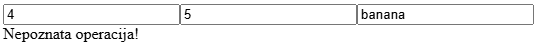
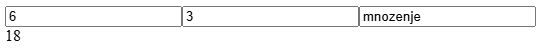
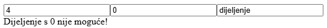
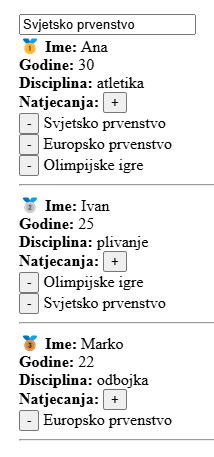
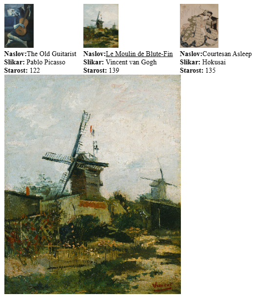

Kolokvij nosi ukupno 40 bodova i piše se 120 minuta.
Potrebno je preuzet projekt drugog primjera kolokvija s Merlina.
(1 boda) Potrebno je napraviti tri reaktivne varijable broj1, broj2, operacija i funkciju provjeraOperacije().
(2 boda) Funkcija provjeraOperacije() treba vratiti true ako varijabla operacija ima neku od sljedećih vrijednost: "zbrajanje", "oduzimanje", "mnozenje" ili "dijeljenje", u suprotnom vraća false.
(2 bod) Stvorite <input> element za svaku varijablu i vežite ih koristeći v-model.
(3 boda) Ako je rezultat funkcije provjeraOperacije() false onda pomoću v-if/v-else direktiva prikažite tekst Nepoznata operacija! u suprotnom napravite izračun varijabli broj1 i broj2 ovisno o vrsti operacije koristeći template syntax = {{ }}


broj2 različit od 0, ako nije, prikažite tekst "Dijeljenje s 0 nije moguće!"
provjeraOperacije() pretvorite u computed funkciju. Napišite u komentaru ispod funkcije koja je razlika između computed funckije u usporedbi s običnom funkcijom u kontekstu ovog zadatka SimpleCalculator.Definirani su sljedeći podaci:
const sportasi = ref([
{
ime: 'Ivan',
disciplina: 'plivanje',
godine: 25,
natjecanja: ['Olimpijske igre', 'Svjetsko prvenstvo']
},
{
ime: 'Ana',
disciplina: 'atletika',
godine: 30,
natjecanja: ['Svjetsko prvenstvo', 'Europsko prvenstvo', 'Olimpijske igre']
},
{
ime: 'Marko',
disciplina: 'odbojka',
godine: 22,
natjecanja: ['Europsko prvenstvo']
}
])
(3 boda) Prikažite sve podatke sportaša i njihova natjecanja koristeći v-for direktivu. Potrebno je izlistati natjecanja.
(1 boda) Dodajte reaktivnu varijablu novo_natjecanje i <input> element za koji će biti vezana.
(3 boda) Implementirajte funkciju dodaj_natjecanje(sportasIndex) koja dodaje novo_natjecanje u polje natjecanja odabranog sportaša. Dodajte <button> element s tekstom "+" koje će pozivati tu funkciju za svakog sportaša.
(3 boda) Implementirajte funkciju ukloni_natjecanje(sportasIndex, natjecanjeIndex) koja uklanja natjecanje iz polja natjecanja odabranog sportaša. Dodajte <button> element s tekstom "-" koje će pozivati tu funkciju za svako natjecanje.
(2 boda) Sortirajte polje tako da sportaš s najviše natjecanja bude pri vrhu (.sort((a, b) => a - b)). Za prvog sportaša ispred imena dodajte zlatnu medalju 🥇, za drugog dodajte srebrnu medalju 🥈, za trećeg dodajte brončanu medalju 🥉.
(2 bod) Dodajte animacije za uklanjanje i dodavanje natjecanja.
.list-enter-active,
.list-leave-active {
transition: all 0.5s ease;
}
.list-enter-from,
.list-leave-to {
opacity: 0;
transform: translateX(30px);
}

Definirani su sljedeći podaci:
const galerija = [
{
slikar: "Pablo Picasso",
godina: 1903,
naslov: "The Old Guitarist",
slika: "/src/assets/slike/The Old Guitarist.png"
},
{
slikar: "Vincent van Gogh",
godina: 1886,
naslov: "Le Moulin de Blute-Fin",
slika: "/src/assets/slike/Le Moulin de Blute-Fin.png"
},
{
slikar: "Hokusai",
godina: 1890,
naslov: "Courtesan Asleep",
slika: "/src/assets/slike/Courtesan Asleep.png"
},
];
(1 boda) Kreirajte komponentu Slika.vue sa parametrima (props): slikar, godina, naslov, slika
(1 bod) Unutar roditelja učitajte i prikažite komponente Slika.vue koristeći v-for direktivu.
(1 bod) Komponenta treba sadržavati prikaz slike visine 100 i prikaz podataka naslov, slikar, starost.
(2 bod) Implementirajte funkciju starost() koja vraća starost slike u godinama.
(2 boda) Ako je starost veća od 136 godina podcrtajte naslov koristeći vezanu klasu (:class).
.underline {
text-decoration: underline;
}
(1 boda) Pritiskom na sliku treba se proslijediti događaj povecaj roditelju ($emit()).
(1 boda) Unutar roditelja dodajte reaktivnu varijablu povecana_slika i <img> element gdje će biti vezana za src atribut.
(3 boda) Kada roditelj dohvati događaj povecaj (@) iz elementa <Slika> treba ažurirati varijablu povecana_slika s odgovarajućom slikom.

node_modules mape